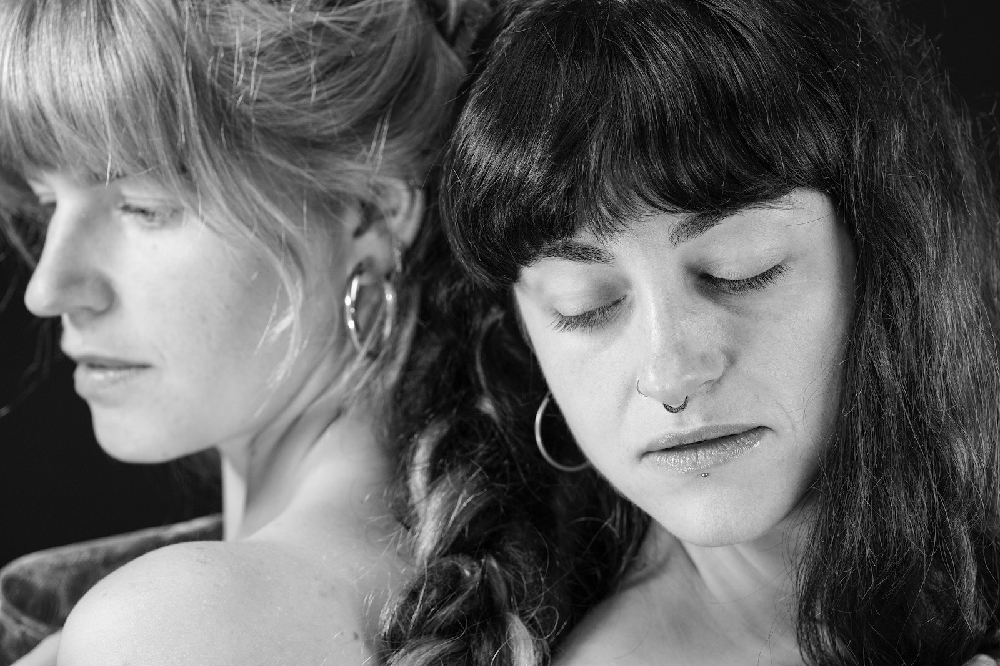
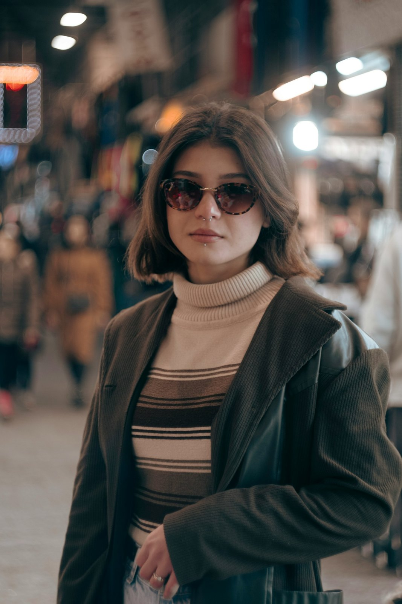

A:
chi ha un'attività e sente che i social non bastano.
Se i tuoi post sono belli ma non portano richieste, è il momento di rivedere la strategia.
Questo mese apriamo pochi posti per chi vuole un marketing pensato e misurato.
Ne parliamo?
Scrivici in DM o prenota una chiamata dal link in bio.
Un caro saluto,
Studio Ortica